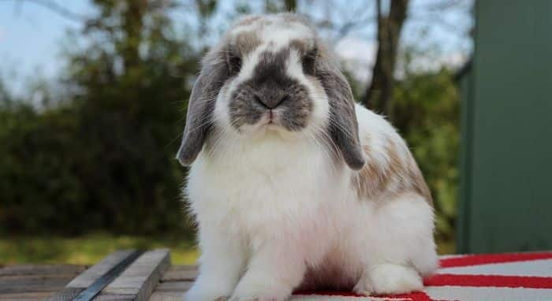
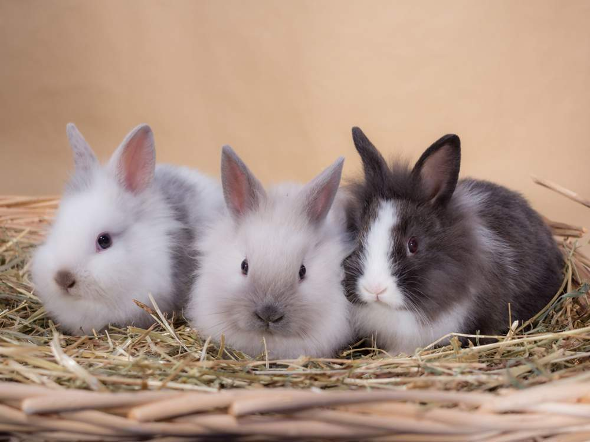

Conejos Holandés Lop: Una Raza Encantadora

Descubre la adorable raza de conejos Holandés Lop, conocidos
por sus distintivas orejas caídas y su temperamento amigable.
En nuestro artículo, exploramos su origen, características físicas,
y consejos esenciales para su cuidado. Si estás pensando en adoptar
un conejo o simplemente quieres conocer más sobre estos encantadores
compañeros, ¡no te pierdas nuestro artículo completo!
Accede a la nota completa aqui
Cuidados Básicos para evitar los ácaros en conejos
 ¿Quieres asegurarte de que tu conejo se mantenga saludable y libre
de parásitos? En nuestro artículo, te ofrecemos una guía completa
sobre los cuidados básicos para prevenir ácaros en conejos. Desde
la higiene adecuada hasta la dieta balanceada y revisiones regulares,
encontrarás todos los consejos esenciales para mantener a tu mascota
feliz y saludable. ¡No te lo pierdas y descubre cómo brindarle el mejor
cuidado a tu conejo!
¿Quieres asegurarte de que tu conejo se mantenga saludable y libre
de parásitos? En nuestro artículo, te ofrecemos una guía completa
sobre los cuidados básicos para prevenir ácaros en conejos. Desde
la higiene adecuada hasta la dieta balanceada y revisiones regulares,
encontrarás todos los consejos esenciales para mantener a tu mascota
feliz y saludable. ¡No te lo pierdas y descubre cómo brindarle el mejor
cuidado a tu conejo!
Accede a la nota completa aqui
Convivencia entre Conejos

¿Sabías que, dependiendo de su raza,
cada conejo es más o menos sociable?. A diferencia de lo que muchos
pueden creer, no todos los conejos necesitan de compañía. Es más,
algunos deben estar solos para que estén sanos.¡No cometas un error!
En este artículo te hablamos al respecto.
Accede a la nota completa aqui